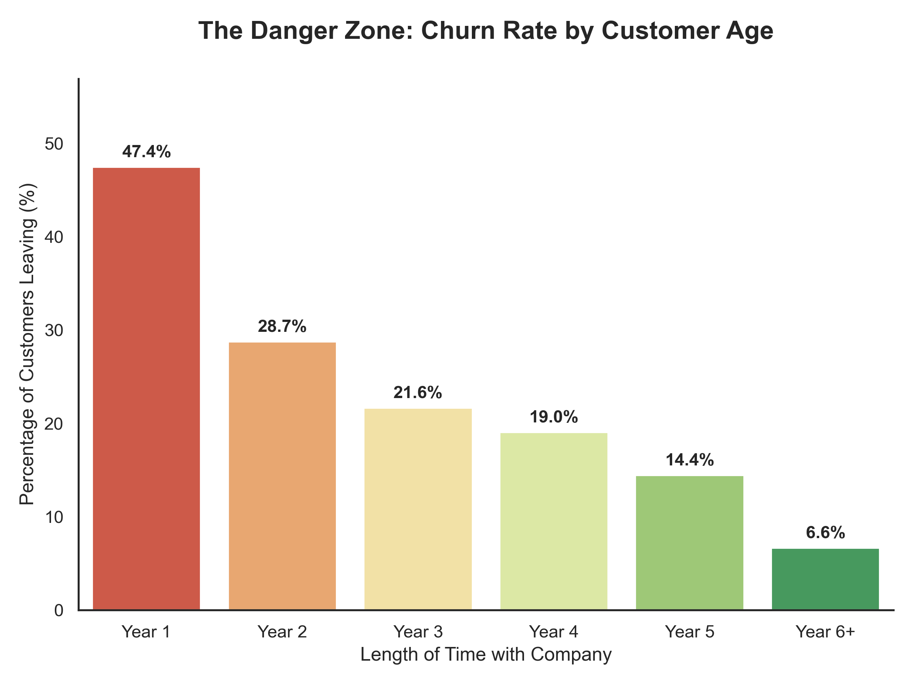
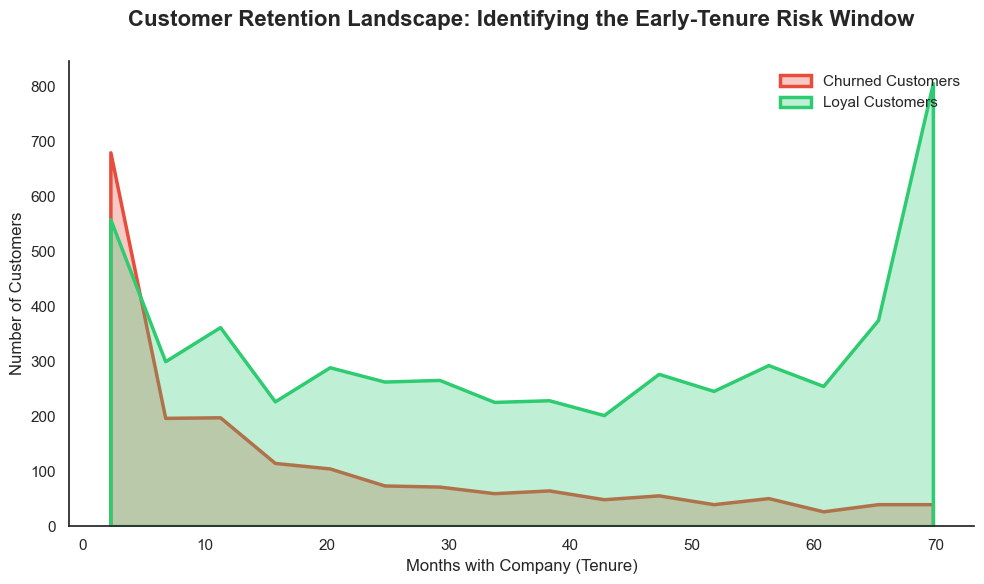
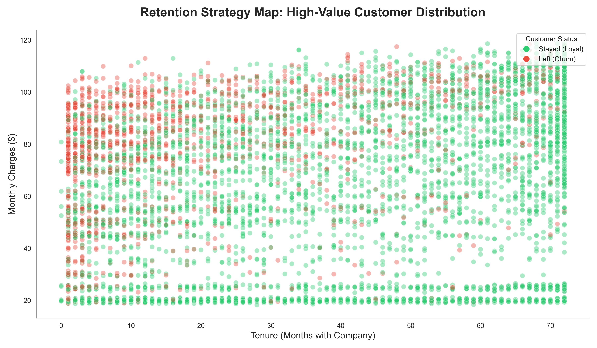

Visual Discovery
The following charts identify the key indicators of churn based on the exploratory data analysis.

Contract Type Risk
This chart reveals that customers on month-to-month contracts have the highest risk of leaving, while those on two-year contracts are the most loyal.

Churn Density Heatmap
This heatmap shows that the highest concentration of lost customers occurs within the first year of a month-to-month contract.

The Critical First Year
This visualization highlights that the risk of losing a customer is highest during the first 12 months of service, dropping significantly after the first year.

Tenure Distribution
This chart shows that customers become significantly less likely to leave the company the longer they stay, leading to a more stable loyal base.

Spending vs. Loyalty
This scatter plot visualizes monthly billing distribution across the customer's lifespan to help identify high-risk spending patterns.

Monthly Billing Distribution
This chart shows that customers who leave tend to have higher monthly bills, with a significant churn spike occurring at higher price points.